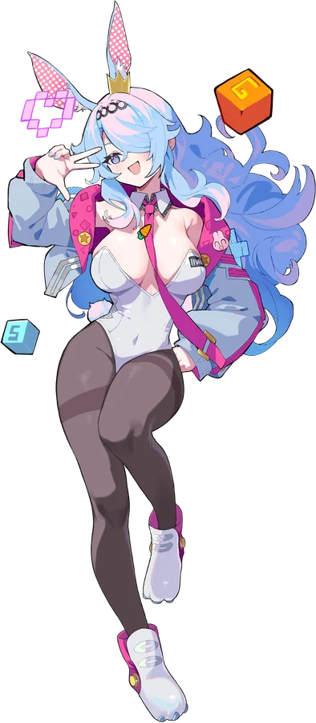
米米 · 看板娘
游戏《吉星派对》的全能看板娘，超级打工战士。便利店、酒吧、超市都有米米打工的身影，恋第一次见到米米就是在便利店。至于米米为什么会成为《吉星派对》游戏的看板娘就不得而知了。
丢弃全部手牌，随后获得原手牌数量+1张卡牌。
每丢弃1张战斗牌，获得1星币。
每累计获得25张卡牌，获得1个筹码。
基础资料
PVE 特性
- 达到1星时立刻获得10星币
- 初始星币+6
- 达到3星时攻击力+1、防御力+1、移动速度+1
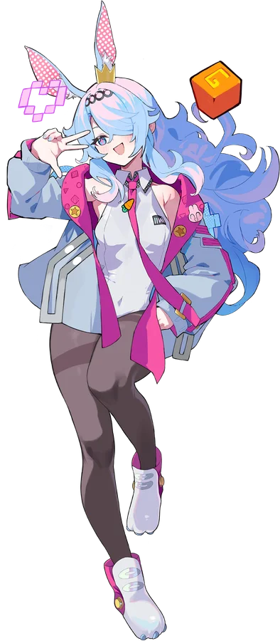
默认

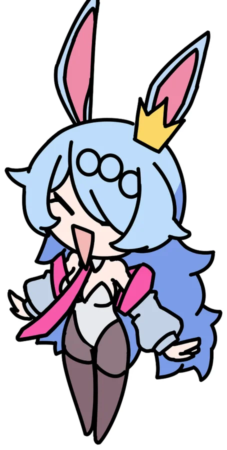
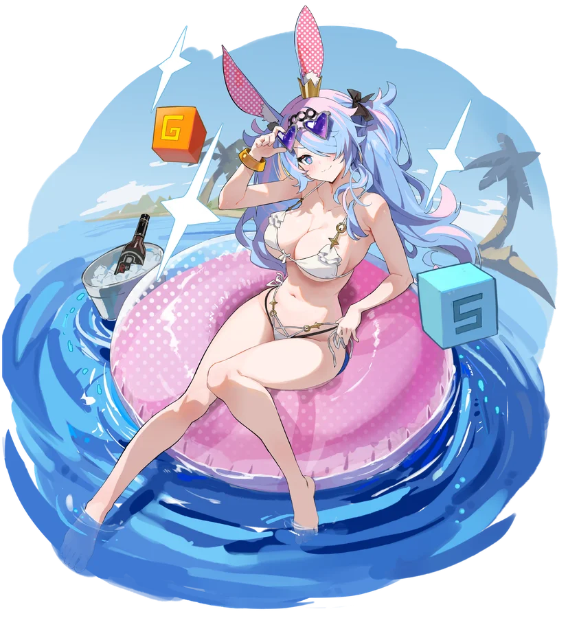
羁绊皮肤
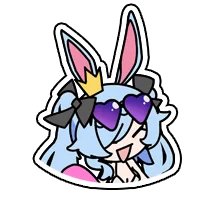
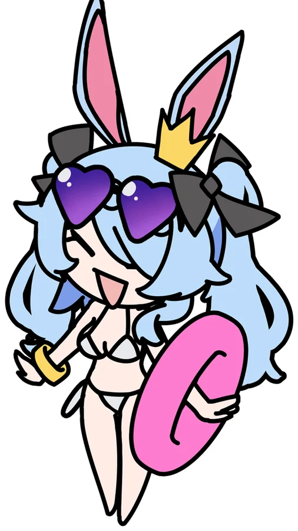
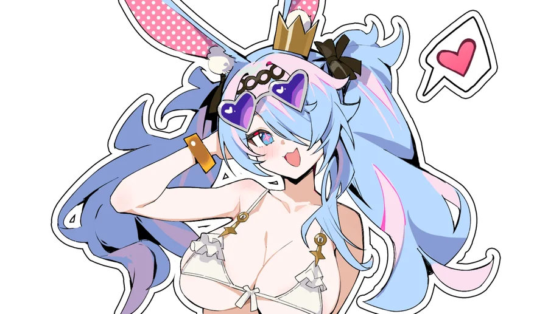
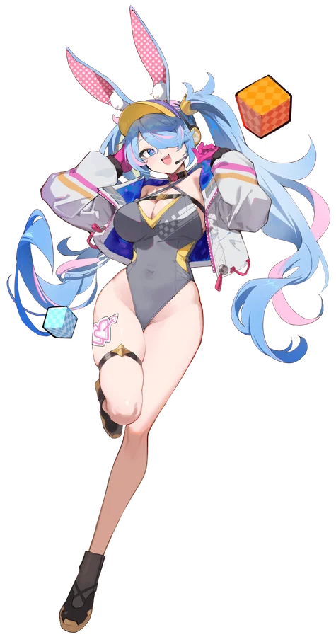
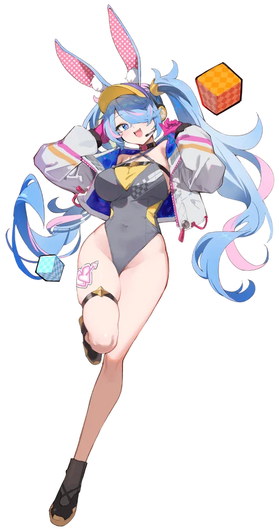
赛车女郎
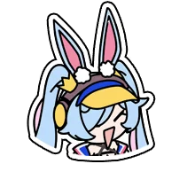
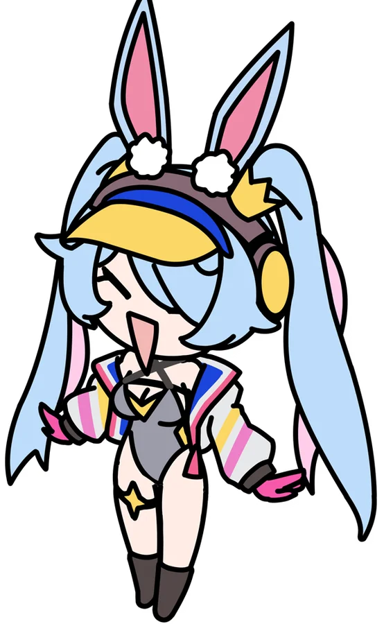
/
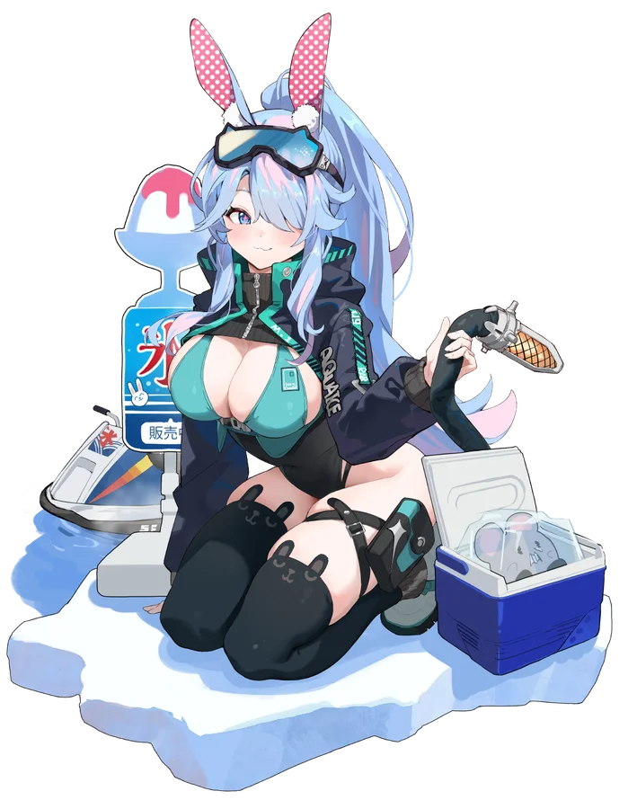
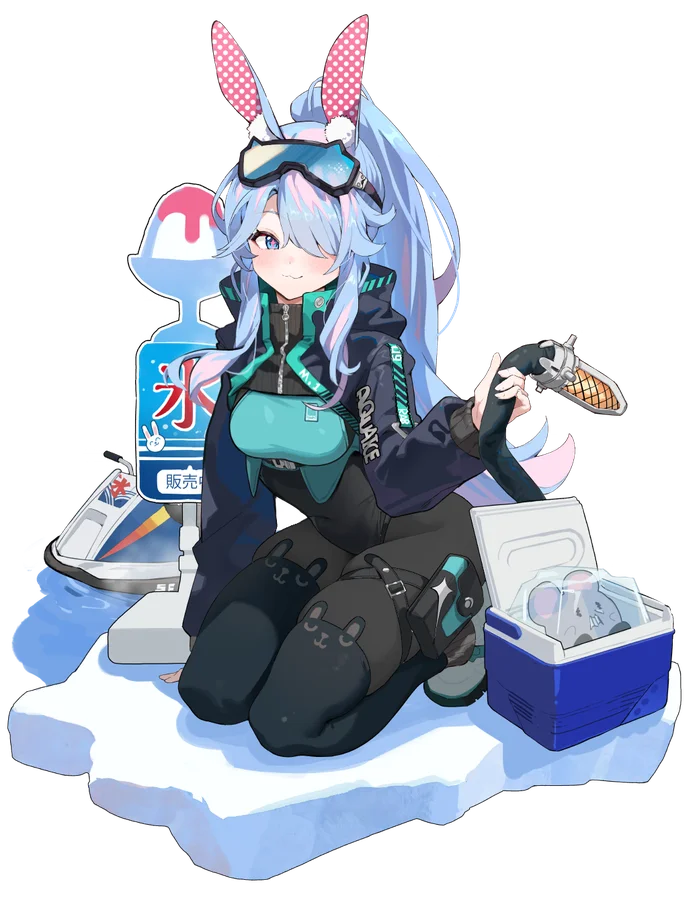
冰沙快递
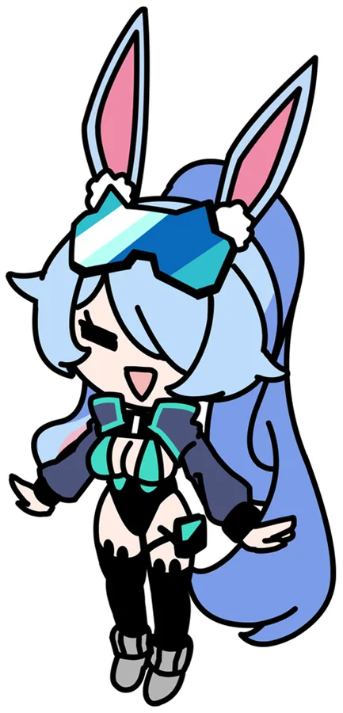
作为最强打工战士的米米，你会在各种场台看到她的身影。 尤其是在夏日的海边打工时，米米更是忙得不可开交。不但要会游泳，还要会潜水，甚至开着摩托艇去送快递。 不过对于米米而言，这些都是家常便饭。 在这到处都是水的地方，为了不弄湿衣服干脆穿上泳衣工作，但是防晒也是必不可少的。 穿梭在各个海水浴场，米米送的冰沙让夏日的酷暑带来一丝凉意。 大家脸上的笑容和打赏就是给予米米辛勤劳动的最好回报。 还不说声谢谢米米?
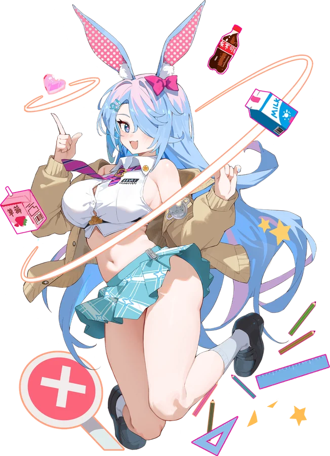
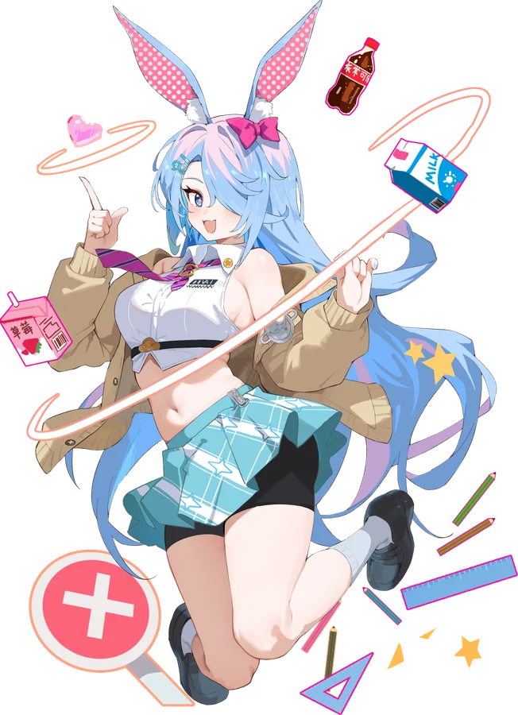
搬运魔法
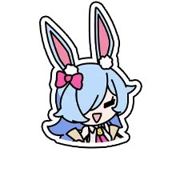
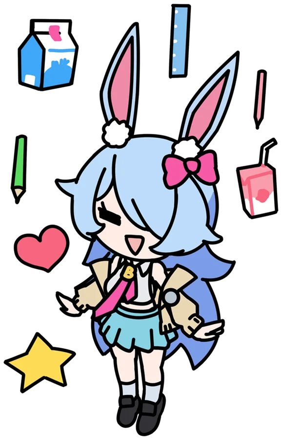
虽然这个世界上有很多厉害的施法者，但米米是个例外。 作为一个普通人，米米不像那些专门受过培训的魔法师，拥有某一门或几门精通的魔法。 她对搬运物体的魔法有着天然的造诣。她并不理解其中的奥秘，也从未潜心研究过，这完全是自然而然的。 不过这类魔法的限制也颇多，搬运过重的物体会大量消耗她的体力。 所以一般情况下，她只会对小件物品使用这种搬运魔法。
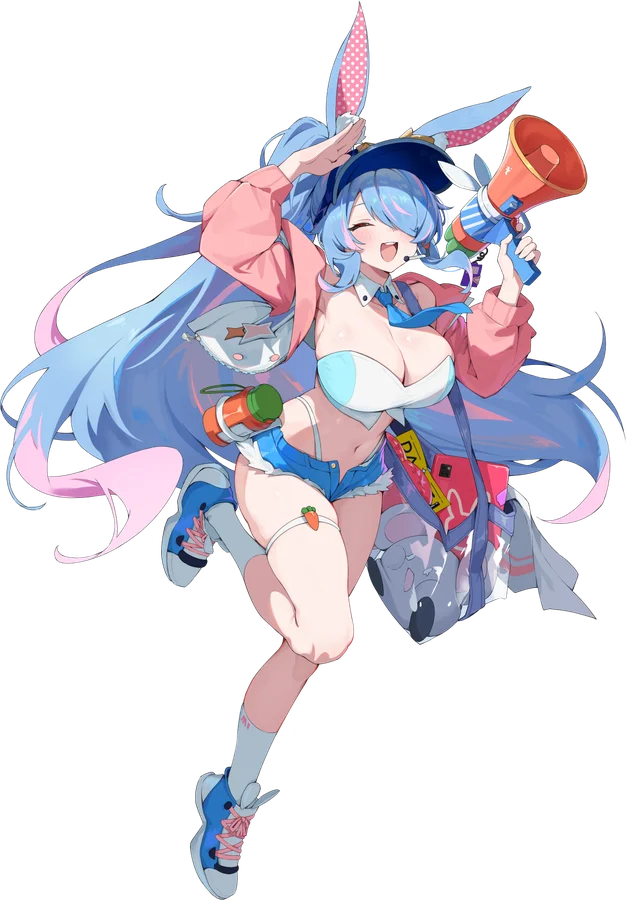
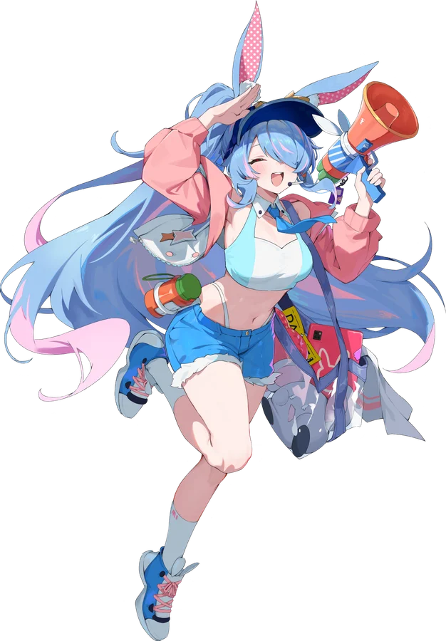
球队经理
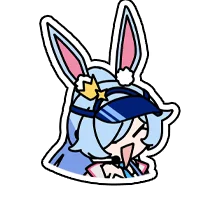
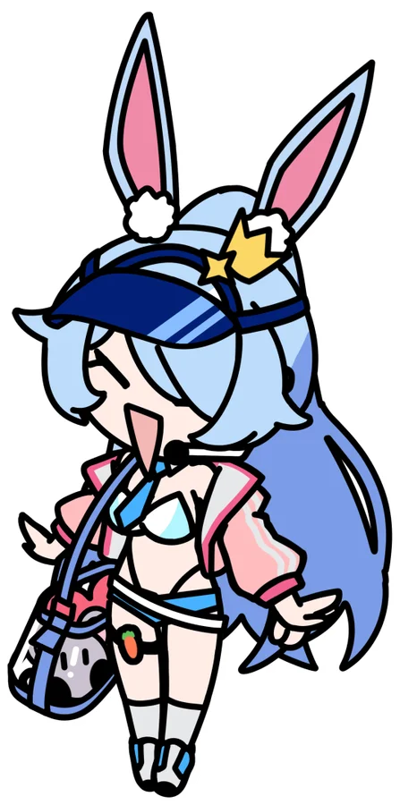
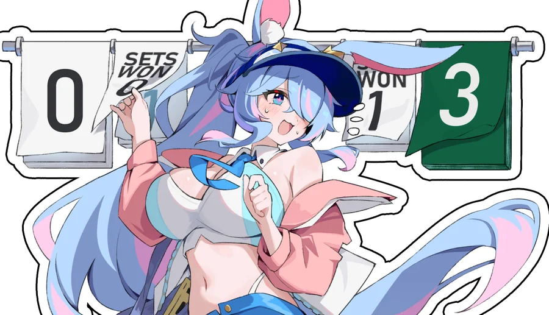
作为正儿八经的打工战士，米米的打工范围可谓非常广泛。这次社区球队的经理因病请假，临时由米米接任球队经理，当然报酬相当丰厚。 米米形象阳光，充满活力。虽然刚加入这个陌生的小团队，但很快和队员们打成一片，大家都喜欢这个活泼可爱的家伙。她总是随叫随到；计分、整理器械、送水等琐事样样精通。更令人惊讶的是，合宿期间她主动包办了全队午餐，还贴心的为每人准备了适合个人口味的加餐，堪称全能经理。 在米米的细致照顾下，球队顺利赢得比赛胜利。交接工作完成后，后她还表示这根本没什么，如果有机会她还会再次帮助大家。 当然，这次经历让米米的打工战士勋章再添新章，也让她在社区中收获了更多认可。
共 19 个表情，点击可放大。


官方 wiki 没有这角色的 /获取 页，头像、名片、卡牌、骰子的完整清单暂缺；下方「档案」里保留了画廊中的零散素材。
人物传记
米米神出鬼没，可能会出现在各种打工场合，除了某些直播工作的时候形象没有任何变化。
皮肤故事
赛车女郎
/
冰沙快递
作为最强打工战士的米米，你会在各种场台看到她的身影。 尤其是在夏日的海边打工时，米米更是忙得不可开交。不但要会游泳，还要会潜水，甚至开着摩托艇去送快递。 不过对于米米而言，这些都是家常便饭。 在这到处都是水的地方，为了不弄湿衣服干脆穿上泳衣工作，但是防晒也是必不可少的。 穿梭在各个海水浴场，米米送的冰沙让夏日的酷暑带来一丝凉意。 大家脸上的笑容和打赏就是给予米米辛勤劳动的最好回报。 还不说声谢谢米米?
搬运魔法
虽然这个世界上有很多厉害的施法者，但米米是个例外。 作为一个普通人，米米不像那些专门受过培训的魔法师，拥有某一门或几门精通的魔法。 她对搬运物体的魔法有着天然的造诣。她并不理解其中的奥秘，也从未潜心研究过，这完全是自然而然的。 不过这类魔法的限制也颇多，搬运过重的物体会大量消耗她的体力。 所以一般情况下，她只会对小件物品使用这种搬运魔法。
球队经理
作为正儿八经的打工战士，米米的打工范围可谓非常广泛。这次社区球队的经理因病请假，临时由米米接任球队经理，当然报酬相当丰厚。 米米形象阳光，充满活力。虽然刚加入这个陌生的小团队，但很快和队员们打成一片，大家都喜欢这个活泼可爱的家伙。她总是随叫随到；计分、整理器械、送水等琐事样样精通。更令人惊讶的是，合宿期间她主动包办了全队午餐，还贴心的为每人准备了适合个人口味的加餐，堪称全能经理。 在米米的细致照顾下，球队顺利赢得比赛胜利。交接工作完成后，后她还表示这根本没什么，如果有机会她还会再次帮助大家。 当然，这次经历让米米的打工战士勋章再添新章，也让她在社区中收获了更多认可。
画廊其他素材

本地未收录该角色的语音台词。